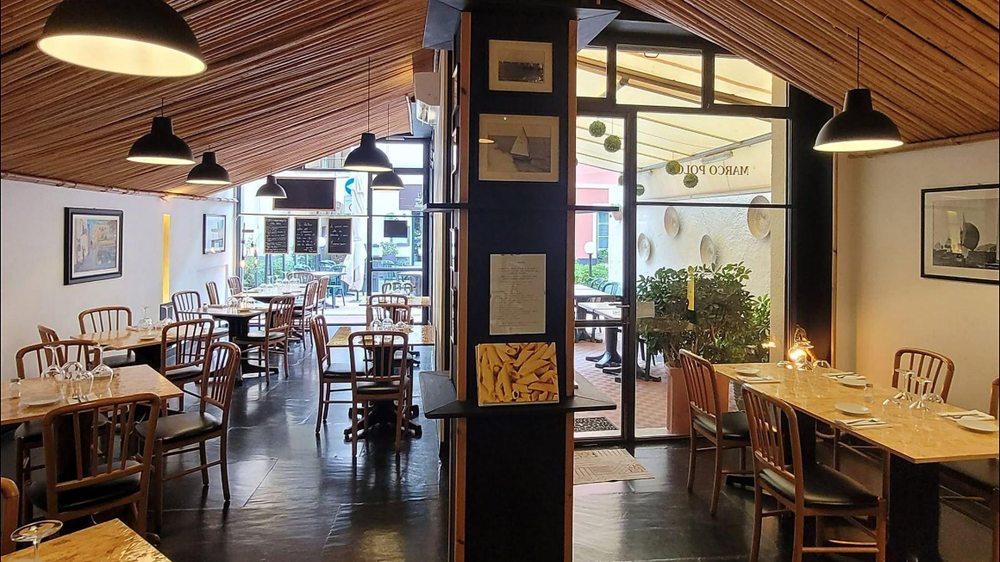
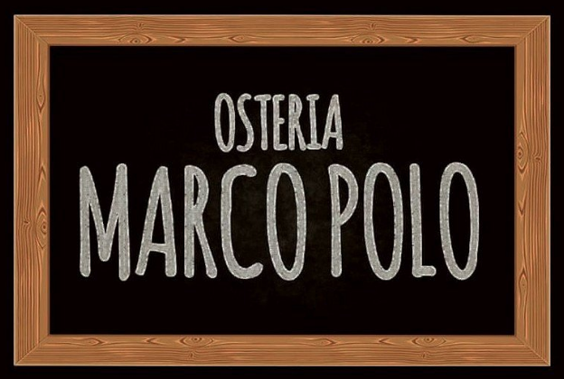
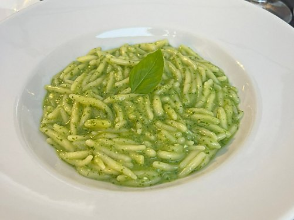
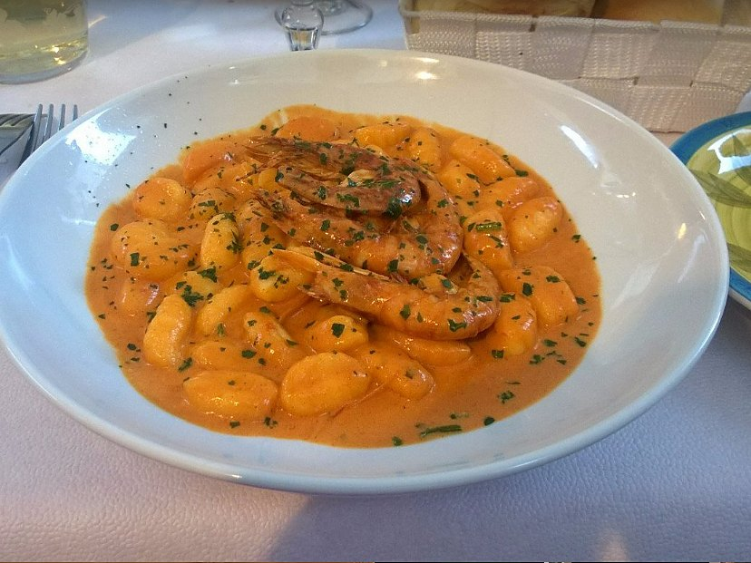
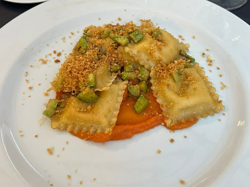
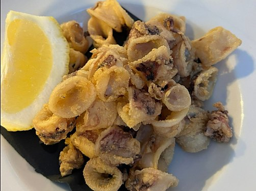
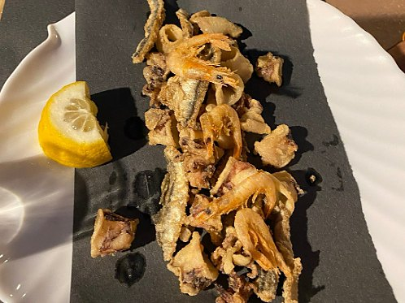
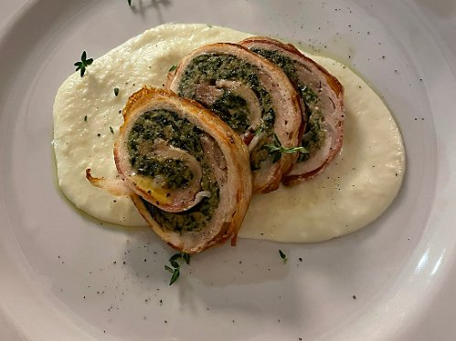
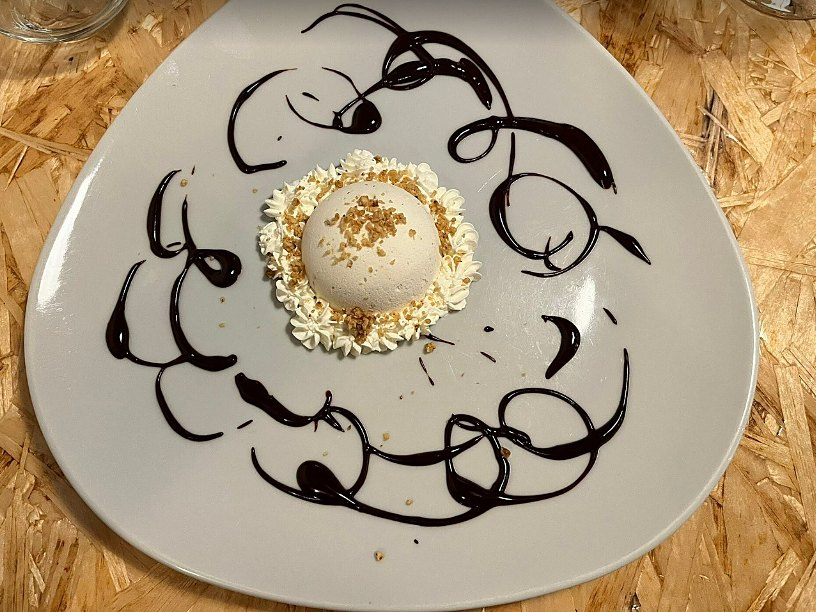

Alassio · dal 1985
Cucina di mare e di terra nel centro di Alassio.
Nella carta di agosto: le trofie al pesto con basilico di Prà, il fritto di calamari, il branzino al forno.
1985l'anno dell'insegna
4,5su Google
555recensioni
6sere su sette
Un assaggio
I piatti
Qualche piatto della carta, come arriva in tavola. Scorri per vederli tutti.







Tre esempi, per far vedere come si vedranno le recensioni vere.
★★★★★
Trofie al pesto come si deve e un fritto leggerissimo. Ci siamo seduti fuori e non ci hanno messo fretta per tutta la sera.Esempio
★★★★★
Siamo capitati per caso mentre giravamo in centro. Menù corto, tutto fresco, prezzi chiari: siamo tornati la sera dopo.Esempio
★★★★★
Con i bambini ci hanno fatto posto subito e il seggiolone era già pronto. Il branzino al forno vale il viaggio.Esempio
Dove siamo
Vieni a trovarci
Siamo in via Giuseppe Garibaldi 27, nel centro di Alassio. Il tavolo si prenota al telefono: rispondiamo noi.
| Lunedì | Chiuso |
| Martedì | 19:00 — 22:00 |
| Mercoledì | 19:00 — 22:00 |
| Giovedì | 19:00 — 22:00 |
| Venerdì | 19:00 — 22:00 |
| Sabato | 19:00 — 22:00 |
| Domenica | 19:00 — 22:00 |
Si prenotaAl telefono, allo 0182 642082, negli orari di apertura.
In sala e fuoriTavoli all'aperto, Wi-Fi e seggioloni per i bambini.
Come arrivareSiamo nel centro di Alassio: il tasto qui sopra apre le indicazioni.